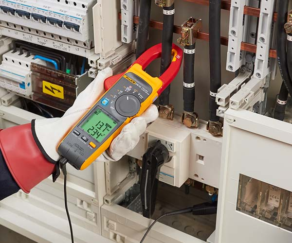
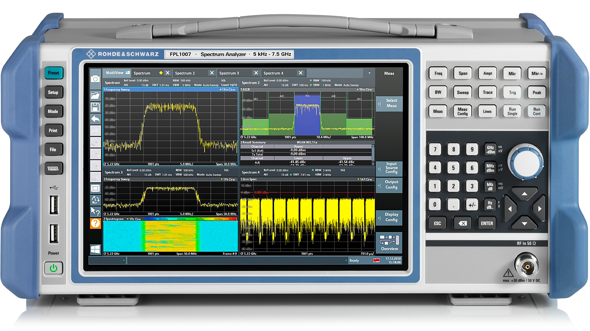
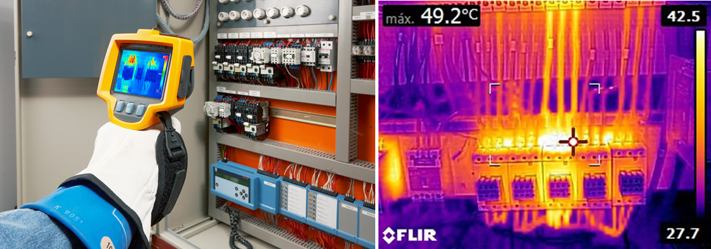
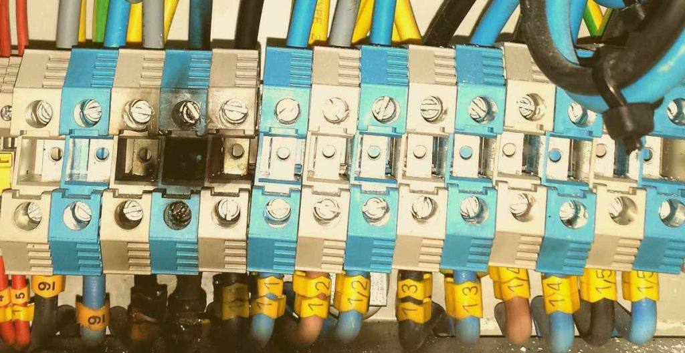
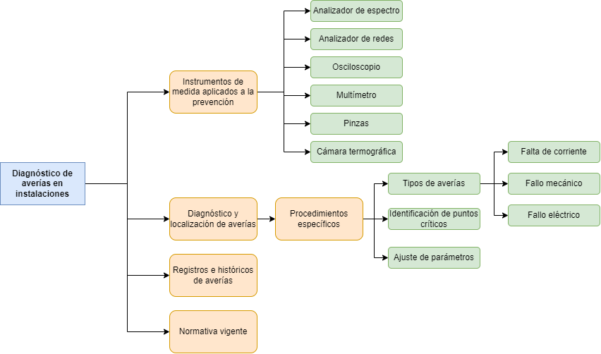

Diagnóstico de averías en instalaciones industriales y sistemas automáticos
Unidad Didáctica: Diagnóstico de averías en instalaciones industriales y sistemas automáticos
OBJETIVOS
Identificar puntos críticos de una instalación automática
Realizar ajustes para que no vuelva a producirse la avería
Definir un protocolo de actuación para localizar y solucionar averías
Realizar las medidas oportunas para localizar la avería
1. Introducción y contextualización práctica
En esta unidad veremos cómo determinar diferentes averías en instalaciones industriales y sistemas automáticos. Para ello, además de la fundamental la experiencia y bagaje de conocimientos del técnico a la hora de reconocer los síntomas y causas de las diferentes de las averías, es preciso emplear una serie de instrumentos de medida que permiten prevenir problemas y analizar el rendimiento de los sistemas.
La mejor avería será aquella que no se produce y la mejor reparación será aquella que no hay que realizar.
La prevención de averías es fundamental para evitar interrupciones y daños en el funcionamiento de un sistema. Es importante que se implemente un mantenimiento preventivo, ya que las averías pueden surgir de manera imprevista y afectar negativamente la productividad de una empresa. Sin embargo, en caso de que se presente una avería, se debe recurrir al mantenimiento correctivo para su reparación. A pesar de los esfuerzos de prevención, es inevitable que ocurran averías, por lo tanto, es necesario tener en cuenta principios básicos para minimizar su impacto en la empresa en su conjunto.
Comprobación de un cuadro eléctrico
1.1. Planteamiento del caso práctico inicial
A continuación, vamos a plantear un caso práctico a través del cual podremos aproximarnos de forma práctica a la teoría de este tema.
Escucha el siguiente audio donde planteamos la contextualización práctica de este tema, encontrarás su resolución en el apartado Resumen y Resolución del caso práctico.
¿Cuál fue la causa principal de la interrupción en la línea de producción?
¿Cómo se solucionó el problema de conexión eléctrica?
¿Qué acciones se tomaron con respecto al motor defectuoso?
¿Qué medidas se tomaron para evitar futuras interrupciones similares?
¿Cómo se garantizó la calidad del restablecimiento de la línea de producción?
En la empresa Gonver, dedicada a la fabricación de maquinaria industrial para la hostelería, se produce una interrupción en una de las líneas de producción. Los operarios informan de que las operaciones programadas no se están llevando a cabo y los equipos no responden correctamente. Ante esta situación, el equipo de mantenimiento industrial, encabezado por el técnico Felipe, se pone en marcha para realizar un diagnóstico de averías y restablecer el funcionamiento normal lo antes posible.
Felipe y su equipo comienzan examinando el panel de control y los registros de alarmas, pero no encuentran ningún error significativo. Prosiguen revisando los sistemas de alimentación eléctrica y los conductores, utilizando instrumentos de medición para verificar la continuidad de los cables y la tensión en diferentes puntos de la instalación. Descubren que uno de los conductores principales está suelto, lo cual está afectando la energía suministrada a los equipos.
Una vez solucionado el problema de conexión, el equipo de diagnóstico se enfoca en los equipos específicos que presentan mal funcionamiento. Realizan pruebas en los motores, sensores y actuadores, detectando que uno de los motores está sobrecalentado y con daños en el bobinado.
Con esta información, Felipe y su equipo proceden a reemplazar el motor defectuoso y realizan ajustes en los parámetros de control para adaptarse al nuevo componente. Posteriormente, llevan a cabo pruebas exhaustivas de funcionamiento para asegurarse de que todos los sistemas estén operando correctamente y que la línea de producción vuelva a su estado normal.
2. Incidencias de las averías en instalaciones industriales y sistemas automáticos
Las averías en máquinas o sistemas automáticos se pueden clasificar en diferentes niveles según su impacto en la producción.
Las incidencias de las averías en los sistemas automáticos pueden clasificarse en función de su repercusión en la planta industrial:
Averías leves
Las averías leves no afectan directamente la producción y permiten que la máquina o sistema continúe funcionando sin problemas. Sin embargo, es importante tener precaución con este tipo de averías, ya que, si se ignoran, pueden llevar al deterioro generalizado de la instalación.
Aunque estas averías no estén relacionadas directamente con la producción, desempeñan un papel importante en el funcionamiento general de la máquina, como es el caso de los señalizadores de situaciones de la secuencia.
Averías moderadas
Por otro lado, las averías moderadas sí tienen un impacto en la producción, pero con una intervención urgente (a menudo realizada por el propio operario) es posible mantener la máquina en funcionamiento. Por ejemplo, si el sistema realiza ciertas operaciones de forma automática y hay una avería, el operario puede realizarlas manualmente para asegurar la continuidad de la producción, aunque posiblemente a un ritmo menor.
Averías graves
Por otra parte, las averías graves son aquellas que impiden por completo que la máquina o el sistema sigan produciendo.
Estas averías tienen un alto coste para las empresas, ya que detienen la producción mientras los gastos fijos continúan acumulándose, como los salarios, alquileres y otros gastos generales.
Es fundamental prestar atención a todas las averías, incluso las leves, ya que su negligencia puede llevar a problemas mayores. Además, es importante tomar medidas para prevenir y corregir averías con el objetivo de minimizar su impacto en la productividad y los costos de la empresa.
Técnico reparando máquina
3. Tipología de averías en sistemas cableados
Hoy en día cada vez se emplean menos máquinas o procesos que utilizan tecnología de automatización cableada. Sin embargo, existen dos casos en los que todavía se encuentran este tipo de sistemas: máquinas o procesos antiguos y máquinas o procesos muy simples.
En el caso de máquinas o procesos antiguos, el principal desafío para los técnicos es la falta de documentación, como esquemas eléctricos o manuales de puesta en marcha, instalación o mantenimiento. Algunos sistemas muy simples pueden no tener ninguna instrucción escrita sobre cómo abordar averías.
3.1. Elementos y sistemas fundamentales en las instalaciones eléctricas
Los componentes más comunes en los sistemas cableados son relés electromagnéticos, temporizadores, contactores y elementos de protección como fusibles, relés térmicos, interruptores magnéticos y diferenciales. Las averías en este tipo de sistemas suelen estar relacionadas con el desgaste y envejecimiento de estos elementos debido a su uso.
Un buen mantenimiento ayuda a reducir significativamente las averías, y cuando ocurren, suelen ser repetitivas, lo que pone de manifiesto las deficiencias de diseño y los puntos débiles de la instalación.
El coste de reparar este tipo de averías es relativamente bajo, ya que los materiales utilizados no suelen ser costosos. Además, si la mayoría de los componentes son de buena calidad, significará que las averías son poco frecuentes y los componentes pueden funcionar sin problemas durante un ciclo de vida de muchas horas.
El tiempo requerido para solucionar las averías en sistemas cableados depende más de la identificación del problema y de la obtención de los repuestos que del tiempo de reparación en sí.
En la mayoría de los casos, la reparación implica desatornillar los terminales de los elementos dañados, desconectar los cables de conexión y reemplazar los componentes defectuosos, volviendo a atornillar los cables en los terminales.
Comprobación de contactores
Tanto en instalaciones antiguas como en instalaciones sencillas, es recomendable dedicar tiempo a crear manuales detalladas que incluyan pruebas funcionales para abordar posibles averías, además de llevar a cabo un mantenimiento preventivo básico.
El ciclo de vida de un dispositivo hace referencia al tiempo previsto de funcionamiento indicado por el fabricante. En función del tipo de producto, el ciclo de vida puede expresarse en distintas unidades: número de maniobras, horas de funcionamiento...
4. Tipología de averías en sistemas programados
Los sistemas de automatización programables suelen ser relativamente modernos acompañados de documentación relacionada con dicho mantenimiento específico.
Además de compartir algunos elementos con los sistemas cableados, los sistemas programables presentan componentes especiales relacionados con los autómatas programables.
Es lógico pensar que en un sistema de automatización programable se puedan producir una mayor variedad de averías en comparación con los sistemas cableados, ya que incluyen componentes más complejos y sofisticados que pueden presentar averías propias.
Por ejemplo, es posible que falle el panel de control del operador y que el proceso continúe sin la posibilidad de interacción entre el operador y el sistema de automatización.
Este tipo de avería no es directa en el sentido de que no afecta al controlador PLC, ni a una parte directamente relacionada con el control. Por lo tanto, pueden ocurrir tal como ya hemos dicho averías leves, moderadas y graves.
Operario realizando un diagnóstico de averías
El coste de reparación de este tipo de averías es mayor que en los sistemas cableados, aunque es cierto que son poco frecuentes debido a que los materiales utilizados han sido sometidos a controles de calidad y se encuentran certificados por el fabricante
El tiempo necesario para realizar una reparación es algo mayor que en los sistemas cableados. Mientras que es fácil tener en stock un relé o un contactor, no es común contar con autómatas, ordenadores o terminales de operador debido a su elevado precio.
Por lo tanto, además del tiempo para determinar la avería, se debe considerar el tiempo necesario para obtener el repuesto. Sin embargo, la sustitución suele ser una operación rápida, ya que en todos los casos se utilizan conexiones enchufables mediante conectores o regletas extraíbles de bornes.
Los PLC actuales permiten, en muchos casos un autodiagnóstico del propio equipo, que podrá ayudar a los técnicos a detectarlas. Esto significa que el tiempo de detección de las averías puede reducirse considerablemente.
Enlacés de interés
El PLC de seguridad incorpora muchas funciones de diagnóstico para detectar cualquier posible fallo interno en el hardware o en el firmware, de forma que un fallo en el PLC no cause ninguna situación “no segura”.
5. Instrumentos de medida aplicados a la prevención
Las herramientas más importantes para el diagnóstico y reparación de averías son los instrumentos de medida, los cuales ya es hemos visto en otros temas. Los instrumentos de medida más comunes:
Polímetro digital
También conocido como multímetro, es un instrumento electrónico que combina varias funciones, siendo las más comunes las de voltímetro, amperímetro y ohmímetro.
Pinza amperimétrica
Es un instrumento práctico y útil que permite medir la corriente que circula por un circuito sin necesidad de interrumpirlo. Se utiliza colocando la pinza alrededor del cable por el que circula la corriente que se desea medir.

Osciloscopio
Es un instrumento electrónico utilizado para representar gráficamente señales eléctricas variables en el tiempo. Existen diferentes tipos, como los de sobremesa, portátiles y para entornos industriales. Muestra los valores de las señales eléctricas en una pantalla, donde el eje horizontal representa fracciones de tiempo y el eje vertical representa los valores de tensión.
Analizador de espectro
Es un instrumento que visualiza en una pantalla las componentes espectrales en un espectro de frecuencias. Puede mostrar cualquier tipo de ondas eléctricas, acústicas u ópticas. Al igual que el osciloscopio, presenta los valores en forma de coordenadas en una pantalla, con una escala logarítmica en el eje vertical para el nivel en decibelios y el eje horizontal para la frecuencia.

Analizador de redes
Es un instrumento utilizado para analizar las propiedades de las redes eléctricas. Mide parámetros relacionados con la tensión, corriente y potencia, y captura y guarda todos los parámetros, transitorios, alarmas y formas de onda. Proporciona registros precisos, como armónicos, medidas de potencia y energía activa, reactiva y aparente, factor de potencia, visualización de alarmas y eventos, forma de onda de las tensiones, y permite su registro y exportación a un ordenador.
Cámara termográfica
Se trata de un instrumento que registra gráficamente el calor emitido por la superficie de un cuerpo en forma de radiaciones infrarrojas. Se utiliza en diversos ámbitos industriales para detectar problemas durante tareas de mantenimiento o reparación de averías.

Es una forma de representar datos en la que los incrementos o decrementos se dan en múltiplos de una potencia de un número base, como 10. Se utiliza para visualizar y analizar datos que abarcan un amplio rango de valores, donde los cambios relativos son más importantes que los cambios absolutos. Permite una representación más compacta.
6. Tipos de averías más frecuentes en instalaciones eléctricas
En el contexto de las instalaciones eléctricas, hay principalmente tres causas que pueden llevar a la interrupción de dichas instalaciones: falta de corriente, fallo mecánico y fallo el circuito eléctrico.
Localización de averías
6.1. Avería por falta de corriente
En muchas ocasiones, la causa más común de una avería en una instalación eléctrica es la falta de corriente. Esto puede deberse a diferentes factores, como la ausencia de tensión en la red, fusibles fundidos por sobrecarga, fusibles fundidos por cortocircuito, cables de alimentación cortados, bornes sueltos o fallos de aislamiento en la instalación, que hace que actúe el interruptor diferencial.
Ausencia de tensión en la red
Es importante verificar si hay corriente llegando a la máquina o receptor: comprobar si los pilotos están apagados y medir la tensión de entrada con un voltímetro.
Algunos motores tienen protección por guardamotor, por lo que cuando hay falta de corriente, se desconectan y se requiere pulsar el pulsador de marcha nuevamente para que la máquina vuelva a funcionar.
Otros tipos de máquinas están protegidas por interruptores magnetotérmicos, por lo que cuando se restablece la corriente, el motor se reinicia automáticamente. En algunas ocasiones, la falta de corriente no es causada por una avería, sino por protecciones que han saltado debido a situaciones puntuales. También es posible que la máquina haya sido desconectada accidentalmente sin darse cuenta.
Fusibles fundidos
Pueden ocurrir por sobrecarga o cortocircuito. Es importante reemplazar los fusibles por otros del mismo amperaje y nunca aumentar su calibre. En caso de cortocircuito, se deben localizar y reparar los circuitos afectados.

Efecto de un cortocircuito en bornas de cuadro
Cables de alimentación cortados
Suelen presentarse en cables flexibles de pequeños receptores. Los cortes suelen ser en los extremos y deben ser reparados o reemplazados.
Bornes sueltos
Los bornes suelen aflojarse con el tiempo, causando problemas de conexión. Es necesario apretarlos o reemplazarlos para evitar daños en los cables y posibles incendios.
Fallos de aislamiento y salto de diferencial
Cuando el diferencial salta, puede indicar un problema en algún receptor específico o en la línea. Es importante revisar y reparar los circuitos afectados, así como asegurar un correcto aislamiento.
Recuerda
En casos de fallos de aislamiento y salto de diferencial, lo que nunca debemos de hacer es anular el diferencial, puentearlo o quitarlo.
6. Tipos de averías más frecuentes en instalaciones eléctricas
6.2. Avería por fallo mecánico
No es una causa común por la cual la maquinaria deja de funcionar.
Entre las principales razones de fallo mecánico se incluyen:
Aflojamiento de las tuercas
Para prevenirlo, es necesario instalar arandelas de presión para evitar que se aflojen nuevamente.
Colocación incorrecta de la máquina
Este problema provoca vibraciones o incluso que la máquina se desplace de su posición. Cada vez que se mueve una máquina, generalmente se vuelve a colocar arrastrándola, lo que ocasiona desajustes en las patas (que suelen estar sujetas con tornillos y zapatas). La solución es sencilla: ajustar las patas y verificar su apoyo.
Fallos en los cojinetes
Cuando los rodamientos no están bien lubricados, las bolas del cojinete se desgastan. El resultado es un ruido fuerte y constante. La reparación consiste en reemplazar el rodamiento. Hoy en día, se utilizan cojinetes sellados que no requieren lubricación periódica.
Correas rotas
Si se escucha el ruido del motor funcionando, pero la máquina no se mueve, significa que la correa de transmisión está partida. Si la correa no está completamente rota, se pueden escuchar golpes de una parte de la correa golpeando contra otras partes. Es necesario reemplazar la correa por una del mismo tamaño y grosor.
Elemento mecánico utilizado para soportar y reducir la fricción entre dos superficies en movimiento relativo, como un eje y una carcasa. También se le conoce como rodamiento o rolinera.
6.3. Avería por fallo eléctrico
En este caso, los síntomas suelen ser los siguientes:
Lectura anormal en un amperímetro
Esto puede indicar una sobrecarga de corriente. La causa puede ser la falta de una fase, el deterioro de una fase o un cortocircuito.
Desconexión de PIA o fusibles
Esto sugiere un consumo excesivo de corriente. La causa puede ser la falta de una fase, el quemado de una fase o un cortocircuito.
Desconexión del interruptor diferencial
Esto indica una derivación a tierra. Puede haber varias causas, como el roce de una pieza con un conductor que desgasta el aislante y produce la derivación.
Desconexión de ambas protecciones anteriores
Cuando se produce un consumo excesivo y al mismo tiempo una derivación a tierra, suele deberse a un motor quemado, generalmente en dos fases y raramente en las tres fases al mismo tiempo.
Ausencia de síntomas
Simplemente el circuito deja de funcionar: Cuando hemos verificado que llega corriente a la máquina y que todos los fusibles están intactos, la causa debe buscarse en los diversos sensores de seguridad de la máquina, como los sensores de cierre de puertas o el sensor de control de temperatura, entre otros.
Soldadura de contactos
Es bastante común que los contactos principales de un contactor se suelden sin que se perciba ninguna anomalía antes de la orden de parada del motor. Esto se debe a que la soldadura de uno o varios polos no impide que el contactor se cierre por completo. Sin embargo, al intentar abrirse, el contactor queda bloqueado debido a los polos soldados, mientras que los polos que no se han soldado se abren solo unas décimas de milímetro.
En estas circunstancias, se genera un arco eléctrico muy corto que quema de manera lenta y constante los polos no soldados, lo que eventualmente puede llevar al incendio del dispositivo. Al examinar el contactor, se puede observar que uno o dos polos están intactos y corresponden a los que estaban soldados. Dado que la corriente no supera la corriente nominal del motor, las protecciones de seguridad no se activarán hasta que el dispositivo esté dañado y se produzca un cortocircuito.
Es importante destacar que esta situación hace que sea necesario inspeccionar regularmente los contactores y realizar un mantenimiento preventivo para evitar problemas de soldadura en los contactos principales. Además, es fundamental contar con protecciones adecuadas y sistemas de detección de fallos que puedan actuar antes de que se produzcan daños graves en los equipos.
7. Diagnóstico y localización de averías
Inicialmente, las averías son detectadas por el operario o el personal encargado de la operación de la maquinaria, equipos o procesos automatizados. La persona que identifica el mal funcionamiento lo comunica al personal técnico competente para que se encargue de la situación.
Comunicación de averías entre operarios
El personal técnico debe determinar el origen del defecto y determinar si se trata de un error de operación (como falta de tensión o falta de materia prima) o una avería, evaluando su gravedad y procediendo a su reparación de manera rápida y eficiente. Es esencial que el personal encargado de la detección de averías tenga un amplio conocimiento del equipo en su totalidad, tanto en términos de mecánica como de automatización eléctrica, ya sea mediante cableado o programación. Este conocimiento se adquiere a través del estudio de la documentación disponible, el trabajo preventivo, la documentación de mantenimiento acumulada con el tiempo y las pruebas realizadas fuera de la producción con el equipo.
Pasos a seguir
Aunque el método de detección de averías puede variar según el equipo, en general se deben seguir los siguientes pasos:
Es necesario hablar con el operario para que explique detalladamente lo sucedido y describa los síntomas que indican la presencia de una avería. Es importante obtener su opinión sobre si considera que se trata de un problema mecánico o eléctrico.
Se deben analizar las explicaciones del operario para descartar un origen mecánico de la avería. En cualquier caso, tanto si se descarta como si no se descarta la parte mecánica, es necesario verificar las tensiones del sistema para asegurarse de que estén dentro de los valores nominales y de que alimenten los elementos clave, como el autómata y las protecciones.
Si se descarta el error mecánico y las tensiones son correctas, se debe considerar la posibilidad de una falla en el sistema de automatización. En este punto, el operario vuelve a ser relevante, ya que sus indicaciones serán de gran ayuda para identificar el punto en el que la secuencia no avanza.
Ordena los siguientes pasos a seguir a la hora de realizar el diagnóstico de averías en sistemas automatizados:
Considerar la opinión del operario
Verificar tensiones nominales
Si es el caso, descartar origen mecánico de la avería
Considerar un posible fallo en el sistema de automatización
Seguir las indicaciones del operario para detectar problemas en la secuencia
Comprobar
¡Correcto!
No es correcto... Respuesta correcta:
8. Procedimientos específicos de sistemas secuenciales
En nuestro caso, como son los sistemas automáticos de una instalación industrial, una vez determinado el lugar de la secuencia en el que no se ha progresado, se deben comprobar todos los sensores, tanto los necesarios para avanzar a la siguiente etapa como los de la etapa anterior. La razón de comprobar los sensores de la etapa anterior es porque un fallo en alguno de ellos también puede afectar la progresión del sistema. Si uno de los sensores de la etapa anterior no está funcionando correctamente, no se cumplirá la condición necesaria para avanzar hacia la siguiente etapa, lo que puede resultar en un estancamiento o interrupción de la secuencia.
Si la parte mecánica no ha alcanzado las posiciones en las que los sensores deben actuar, se debe realizar un posicionamiento manual de la parte mecánica para que estos elementos funcionen correctamente.
Si se detecta que algún sensor no opera correctamente siguiendo el procedimiento detallado más adelante, debe ser reemplazado lo antes posible.
Si no se detecta ningún sensor con errores de funcionamiento, pero aun así no progresa, se debe intentar reiniciar todo el proceso realizando un apagado general del equipo y reposicionando la parte operativa como sería la parte mecánica del proceso.
En el caso de un sistema de automatización programable, es necesario verificar que los LED que indican la activación de las entradas estén encendidos o apagados según corresponda. Si un LED de una entrada no se enciende, significa que hay un error entre el sensor y el autómata, bien de cableado o funcional del sensor.
LED de módulo entradaErrores del S7 300 LED
En el caso de un sistema de automatización cableado, si el error persiste en el mismo punto de la secuencia, se debe evaluar el estado de los relés. Por ejemplo, reemplazar los relés por otros nuevos sería y comprobar el funcionamiento.
Por otra parte, existe la opción de analizar el correcto funcionamiento del PLC verificando las entradas y salidas del autómata desconectándolas del proceso y conectándolas a un conjunto de interruptores que simulan entradas digitales, así como utilizar indicadores de salida para verificar las salidas.
9. Ajuste de parámetros de protecciones
Como veremos, es muy importante ajustar correctamente los parámetros de los dispositivos que lo requieran, como los arrancadores electrónicos, los variadores de velocidad, los sensores de presencia, los crepusculares y otros elementos de control.
Los beneficios más significativos que se obtienen al realizar un ajuste adecuado de los parámetros son los siguientes:
Un funcionamiento adecuado de la secuencia de control.
Mayor durabilidad de los dispositivos del sistema.
Menor cantidad de averías.
Mayor ahorro energético.
Recomendaciones
Por tanto, es fundamental seguir dos recomendaciones básicas:
Conocer en detalle el funcionamiento del sistema automático y los objetivos que se persiguen, como velocidad, calidad, fiabilidad y seguridad. No solo se debe tener en cuenta el funcionamiento inmediato, sino también los posibles cambios a lo largo del ciclo de vida del sistema automático.
Comprender y contar con toda la documentación técnica de los elementos de control y actuación del sistema, así como tener en cuenta las recomendaciones y observaciones de los fabricantes.
Probabilidad de que un equipo o sistema opere sin errores, durante un tiempo determinado, y en unas condiciones de funcionamiento determinadas.
Ejemplo
Un ejemplo de ajuste muy común que puede provocar fallos en el sistema, además de averías en los motores, sería el ajuste de la intensidad del relé térmico de protección y fusibles de protección.
Como ya sabemos por otros temas, los relés térmicos disponen de una ruleta selectora, que permite seleccionar la intensidad de actuación ajustándose intensidad nominal del motor se encuentre entre dentro de él. Por otra parte, los fusibles se escogen de tal manera que la corriente asignada del fusible será siempre mayor que la nominal del motor.
Es decir, si tenemos por ejemplo un motor de 50 kW con una intensidad de 90 amperios se seleccionaría un relé térmico de rango entre 80-104 Amperios lo que nos permitiría elegir fusibles aM de 125 Amperios.
Sin embargo, en el contexto de un arrancador estrella-triángulo, al colocar el relé térmico en serie con los devanados del motor, es necesario elegir un valor de corriente distinto para ajustar el relé. Este valor debe ser I/√3, donde I representa la corriente nominal del motor.
10. Registros e históricos de averías
El análisis de averías tiene como propósito identificar las causas subyacentes de ciertas averías, especialmente aquellas que ocurren repetidamente o que tienen un alto costo. Su objetivo principal es tomar medidas preventivas para evitar futuras ocurrencias.
Es importante destacar esta doble función del análisis de averías:
Determinar las causas de una avería: el análisis de averías busca comprender las razones específicas por las que se produjo una avería en particular. Mediante un examen exhaustivo de los factores involucrados, se busca identificar los elementos que contribuyeron al fallo del sistema.
Proponer medidas preventivas: una vez que se han determinado las causas raíz de la avería, se pueden desarrollar medidas y acciones correctivas para evitar su recurrencia.
Formularios de registro de averías
Al igual que los formularios utilizados para el registro de mantenimiento, la estructura de los formularios empleados en el registro de averías permite guiar al técnico en su labor. Estos pueden variar ampliamente, adaptándose a las particularidades de cada empresa. Sin embargo, generalmente incluyen los siguientes campos:
Identificación del equipo o sistema donde se produjo la avería.
Fecha del registro.
Nombre y apellidos del técnico encargado de registrar la avería.
Breve resumen que describe la naturaleza de la avería y la solución propuesta.
Tiempo invertido. Puede incluir varios datos para facilitar la toma de decisiones, como el tiempo transcurrido desde la detección de la avería hasta la notificación al técnico de mantenimiento, el tiempo desde la notificación hasta la llegada del técnico, el tiempo de diagnóstico y el tiempo de reparación.
Ejemplo de registro de avería
Registro histórico de averías
Un registro de averías adecuado y completo es de gran ayuda para la toma de decisiones, ya que permite mantener un historial de averías. Esto facilita la toma de decisiones objetivas sobre nuevas inversiones, contratación de personal de mantenimiento, programas de formación o adquisición de herramientas.
En la actualidad, los sistemas de visualización y control, como los paneles de control y los sistemas SCADA, son herramientas informáticas muy útiles. No solo ayudan a localizar averías, sino que también registran automáticamente datos concretos y objetivos sobre estas, como la fecha y hora de la incidencia, el operario a cargo en ese momento y el proceso de resolución adoptado.
Avisos mostrados por SCADA WinCCEjemplo de historial de averías
Cualquier evidencia demostrable de un hecho. En el caso del mantenimiento y las averías, un registro sería un formulario rellenado, donde se detalle el trabajo realizado.
11. Identificación de puntos críticos
Identificar los posibles puntos críticos en un sistema automatizado es una tarea muy importante para los técnicos, no solo durante la planificación del montaje, sino también en la etapa de interpretación de los requisitos y toma de decisiones.
Recuerda
Analizar detenidamente el sistema a automatizar y descubrir posibles puntos débiles suele ser una inversión acertada.
Una vez que estos puntos se han identificado, es necesario tomar medidas adecuadas para minimizar su impacto en el sistema automático en su conjunto. Es importante destacar que no se trata de resolver una avería en particular ni de diseñar un plan de mantenimiento, sino de crear un diseño, una instalación y una programación que eviten averías, faciliten el mantenimiento futuro y logren un sistema más seguro y fiable.
Puntos críticos
Los puntos críticos pueden variar significativamente de un sistema automático a otro, por lo que la experiencia en un sector específico es fundamental para determinar cuáles son esos puntos débiles. Si se ha tenido en cuenta la identificación de estos puntos críticos durante la recopilación de datos y su posterior interpretación, tomar decisiones al respecto será mucho más sencillo.
Algunas preguntas importantes a tener en cuenta son: la vida útil prevista del sistema, el impacto del entorno en el sistema, la exposición a golpes, el porcentaje de dispositivos mecánicos y electromecánicos, y los posibles peligros en la secuencia de funcionamiento. El diseño de la secuencia de control debe priorizar la seguridad y facilitar la resolución de averías y el mantenimiento del sistema.
Tecnología
Posibles puntos críticos
Bus dedicado
Pérdida de señal de control debido a la caída de tensión
Restricciones particulares impuestas por cada sistema (topologías, distancias, tensión de alimentación mínima, capacidad del sistema...)
Sistemas inalámbricos
Pérdida de señal de control debido a barreras que la puedan atenuar
Compatibilidad electromagnética e interferencias
Sistemas cableados
Puntos de conexión entre los elementos del sistema
Continuidad de la señal
Sistemas neumáticos
Presión del circuito de aire comprimido
Estado del aire (impurezas)
Sistemas programados
Tensión de alimentación del elemento de control
Tensión y corriente de las entradas y salidas del elemento de control
Características particulares del elemento de control (capacidad de memoria, rapidez en el procesamiento de datos...)
Autoevaluación
Pregunta Verdadero-Falso
Retroalimentación
Verdadero
Tal y como hemos visto en el apartado 11, su objetivo principal es tomar medidas preventivas para evitar futuras ocurrencias.
Caso Práctico 1: Identificación de elementos averiados
Planteamiento
En muchas ocasiones una avería o mal funcionamiento en una instalación puede tener una única causa localizada en un solo elemento averiado. Esto puede ser especialmente común en sistemas complejos donde un componente defectuoso puede afectar a múltiples partes del sistema.
Relés electromagnéticos
Nudo
Se precisa identificar los síntomas de la avería y relacionarlos con sus posibles causas sobre un proceso automático. Para ello es necesario realizar pruebas para identificar si se trata de un problema mecánico o eléctrico.
Desenlace
Es muy importante que el técnico interprete correctamente toda la documentación técnica relacionada con el automatismo o automatismos de la máquina o proceso. Una avería común cuando se sospecha que un relé no está funcionando correctamente es que se haya aflojado del zócalo. Para solucionarlo, basta con presionarlo suavemente para que vuelva a su posición correcta y restablezca el contacto con los terminales y el zócalo.
Es importante tener cuidado de no pegar el relé al zócalo, ya que esto dificultaría su manipulación en el futuro. También es posible que las bridas de sujeción se rompan, especialmente en equipos sujetos a vibraciones y movimientos. Aunque menos frecuente, también puede ocurrir que un relé con accionamiento manual quede enclavado.
Si ninguno de estos problemas anteriores es evidente, se debe extraer el relé de su peana y medir la resistencia de la bobina con un ohmímetro. La resistencia debe ser baja, pero no nula (lo que indicaría un cortocircuito) ni demasiado alta (lo que podría indicar que la bobina está rota).
Si las pruebas sin tensión son positivas, se debe probar el relé aplicando la tensión correspondiente según las indicaciones del fabricante. Si el relé, cuando se acciona con tensión en la bobina en vacío (sin carga en los contactos), no vuelve a su posición inicial al retirar la tensión, es posible que su muelle de retorno esté deteriorado y se deba reemplazar el relé completo. Si el relé no se acciona, puede haber un bloqueo mecánico y también se deberá sustituir.
Caso Práctico 2: Comprobación de los sensores y detectores
Planteamiento
Existen numerosos sensores disponibles en el mercado. Es fundamental que cualquier técnico de mantenimiento esté familiarizado con los elementos más comúnmente utilizados en la automatización industrial, con el fin de verificar su correcto funcionamiento.
Nudo
Para la comprobación de los sensores y detectores existen procedimientos que deben seguirse para los elementos más frecuentes en la automatización industrial.
Desenlace
a) Detectores de posición mecánicos (finales de carrera)
Estos dispositivos contienen una o más secciones de contactos que se activan mediante una palanca, rueda u otro mecanismo conectado al sistema mecánico, indicando así la posición de alguna de sus partes. Las pruebas para su verificación pueden ser:
Con tensión eléctrica: se utiliza un polímetro configurado como voltímetro para verificar si el interruptor del final de carrera se abre o cierra al accionar mecánicamente la palanca, rueda u otro elemento de activación que forme parte del circuito.
Sin tensión eléctrica: en este caso se deben desconectar los conductores de los terminales del dispositivo que se está verificando. Luego, utilizando un polímetro configurado como medidor, se verifica si al accionar el dispositivo se mantiene o se interrumpe la continuidad eléctrica, dependiendo de si el contacto es normalmente abierto o cerrado.
Final de carrera
b) Detectores de proximidad inductivos o capacitivos
Generalmente tienen tres conductores: dos para la alimentación y uno para indicar la activación del dispositivo. La alimentación suele ser una corriente continua de 24 V y se debe verificar con un polímetro que la tensión esté dentro del rango de trabajo permitido. Es recomendable verificar si el consumo coincide con las especificaciones del fabricante, lo que indica un funcionamiento razonable de los circuitos internos. Debido a su electrónica interna, es posible que la salida de estos sensores no entregue una señal a menos que esté conectada a una carga. Normalmente, cuando funcionan correctamente, al acercar un objeto metálico a su zona frontal, deben cambiar de estado. Algunos sensores incluyen un indicador LED para mostrar cuándo están activos y cuándo no objeto.
Sensor capacitivo
12. Normativa vigente. Norma europea, nacional y autonómica
Ley de Prevención de Riesgos Laborales
La vigente Ley de Prevención de Riesgos Laborales (PRL) en España es la transposición de la Directiva de Seguridad de la Unión Europea. Esta ley establece el marco jurídico para desarrollar los requisitos de Seguridad y Salud en el Trabajo.
La Ley de PRL establece las obligaciones de los empleadores y los derechos de los trabajadores en cuanto a la seguridad en el trabajo. Reconoce el derecho de los trabajadores a una protección eficaz en materia de seguridad y salud, así como el deber de los empleadores de proteger a los trabajadores frente a los riesgos laborales.
Además, la Ley prevé una serie de Reglamentos Técnicos específicos que desarrollan aspectos concretos relacionados con la Seguridad y Salud en el Trabajo. Estos reglamentos establecen requisitos mínimos para la protección de la seguridad y salud de los trabajadores.
Cartel con las cinco reglas de oro
Reglamentos Técnicos
Algunos de los principales Reglamentos Técnicos derivados de la Ley de Prevención de Riesgos Laborales y que afectan a todas las empresas son:
Reglamento de lugares de trabajo (RD 486/97)
Reglamento de equipos de trabajo (RD 1215/97)
Reglamento de equipos de protección individual (RD 773/97)
Reglamento de señalización (RD 485/97)
Reglamento de manipulación manual de cargas (RD 487/97)
Reglamento de pantallas de visualización (RD 488/97)
En cuanto a la legislación que afecta a los fabricantes de máquinas nuevas, incluido el sector de máquina-herramienta, se mencionan las siguientes directivas:
Directiva de Máquinas 89/392/CEE (RD1435/92)
Directiva de Compatibilidad Electromagnética 89/366/CEE (RD 444/94)
Directiva de Baja Tensión 73/23/CEE (RD 7/88)
Directiva de Recipientes a Presión Simples 97/404/CEE (RD 1495/91)
Estas directivas establecen requisitos específicos para la seguridad de las máquinas y otros aspectos relacionados, como la compatibilidad electromagnética y la baja tensión.
13. Resumen y resolución del caso práctico de la unidad
Resumen
En el ámbito de las instalaciones eléctricas, es algo básico poder disponer con elementos y sistemas adecuados. A pesar de ello, pueden surgir averías en sistemas industriales. Para prevenirlas, se utilizan instrumentos de medida como analizadores de espectro, osciloscopios y cámaras termográficas. En caso de averías, se aplican procedimientos específicos de diagnóstico y localización. También se realizan ajustes en sistemas automáticos, elementos de protección y elementos programables. Es esencial mantener registros de averías para análisis históricos. Todas estas actividades deben cumplir con la normativa correspondiente.
Estos instrumentos son fundamentales para llevar a cabo el diagnóstico y reparación de averías, ofreciendo información precisa y facilitando la resolución de problemas en distintas áreas de la industria.

Esquema resumen de la unidad
Resolución del caso práctico
1) ¿Cuál fue la causa principal de la interrupción en la línea de producción?
La principal causa de la interrupción en la línea de producción fue una conexión eléctrica defectuosa en uno de los conductores principales y un motor con daños en el bobinado.
2) ¿Cómo se solucionó el problema de conexión eléctrica?
El problema de conexión eléctrica se resolvió mediante la identificación y reconexión adecuada del conductor suelto, restableciendo así la alimentación correcta a los equipos afectados.
3) ¿Qué acciones se tomaron con respecto al motor defectuoso?
Con respecto al motor defectuoso, se procedió a reemplazarlo por uno nuevo y se realizaron ajustes en los parámetros de control para adaptarse al nuevo componente.
4) ¿Qué medidas se tomaron para evitar futuras interrupciones similares?
Para prevenir futuras interrupciones similares, se implementó un programa de mantenimiento preventivo que incluye inspecciones regulares de las conexiones eléctricas y pruebas en los equipos clave. Además, se estableció un monitoreo continuo de los parámetros de funcionamiento para detectar cualquier anomalía a tiempo.
5) ¿Cómo se garantizó la calidad del restablecimiento de la línea de producción?
Para garantizar la calidad del restablecimiento de la línea de producción, se llevaron a cabo pruebas exhaustivas de funcionamiento para asegurarse de que todos los sistemas estuvieran operando correctamente antes de reanudar la producción. Además, se estableció un seguimiento periódico para verificar que no hubiera.
Bibliografía
Técnicas y procesos en instalaciones domóticas y automáticas. González Rodríguez, Francisco de Paula. ISBN 13: 978-84-19872-56-2